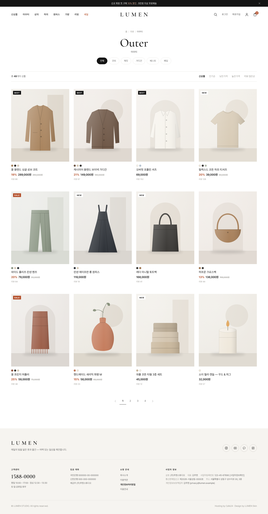
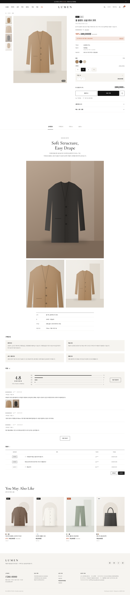
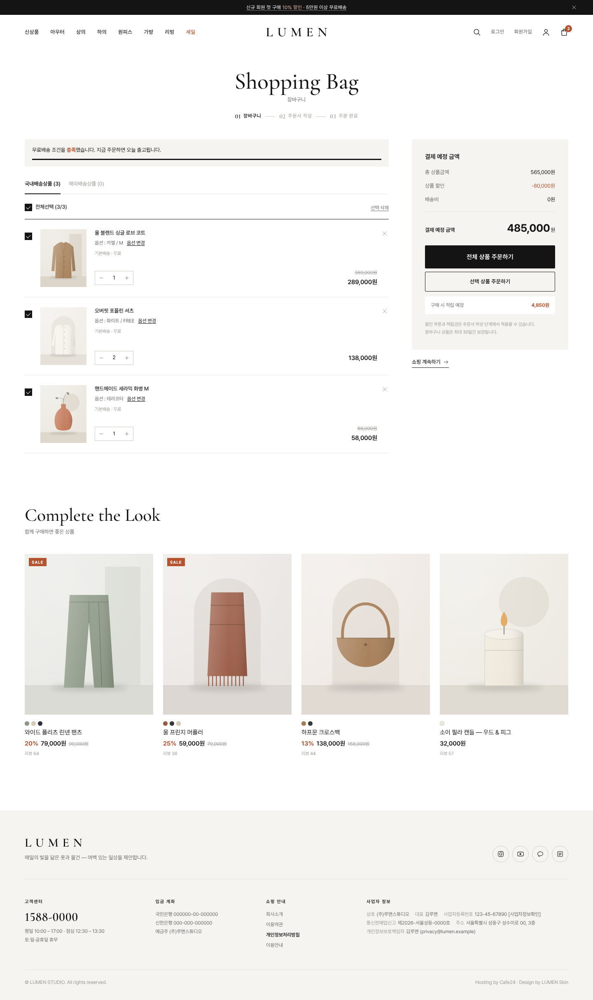

Cafe24 Responsive Skin
LUMEN
빛과 여백으로 완성하는 미니멀 패션·라이프스타일 스킨
PC · 태블릿 · 모바일 반응형스마트디자인색상 1파일 변경

상품 사진이 주인공이 되도록 장식을 덜어냈습니다. 넉넉한 여백, 4:5 큰 상품 이미지, 영문 세리프 포인트로 브랜드의 분위기를 차분하게 전합니다. 의류·잡화·리빙 소규모 브랜드에 잘 맞습니다.

하나의 스킨으로 PC·태블릿·모바일을 모두 지원합니다.
홈·카테고리·검색·마이·장바구니를 엄지 한 번으로 이동합니다.
상품 위에 마우스를 올리면 두 번째 컷이 보입니다.
판매가와 소비자가를 비교해 할인율을 자동으로 계산합니다.
상세페이지에서 스크롤해도 구매 버튼이 따라옵니다. 모바일은 하단 고정 버튼으로 바뀝니다.
메인 8개 섹션을 주석 블록 단위로 켜고 끕니다.
외부 라이브러리 없이 순수 JavaScript로 만들어 빠르게 열립니다.
키보드 포커스, 대체 텍스트, ARIA 속성을 적용했습니다.
정렬, 컬러칩, NEW·BEST·SALE 배지, 리뷰 수를 한 화면에 담았습니다.

썸네일 갤러리, 쿠폰 안내, 옵션 선택, 탭형 상세정보·구매안내·리뷰·Q&A를 갖췄습니다.


css/lumen.variables.css의 값만 바꾸면 스킨 전체의 분위기가 바뀝니다.
:root {
--c-ink: #141414;
--c-accent: #B5532F; /* 세일·배지 포인트 색 */
--font-base: "Pretendard", sans-serif;
}
| 지원 환경 | 카페24 스마트디자인 · 반응형 |
|---|---|
| 권장 브라우저 | Chrome · Safari · Edge · 삼성인터넷 최신 버전 |
| 폰트 | Pretendard, Cormorant Garamond (SIL OFL 1.1 — 무료 상업 이용) |
| 제공 문서 | 설치·사용 매뉴얼 (로고/배너 교체, 색상 변경, 섹션 on/off) |
| 샘플 이미지 | 미리보기용 이미지는 스킨에 포함되지 않습니다 |
브랜드의 빛을 가장 조용하게 보여주는 방법.
※ 화면 이미지는 연출용 예시이며, 실제 쇼핑몰의 상품·배너 이미지는 구매자가 직접 등록합니다.
※ 결제·주문서 등 카페24 시스템 기능은 카페24 기본 정책을 따릅니다.